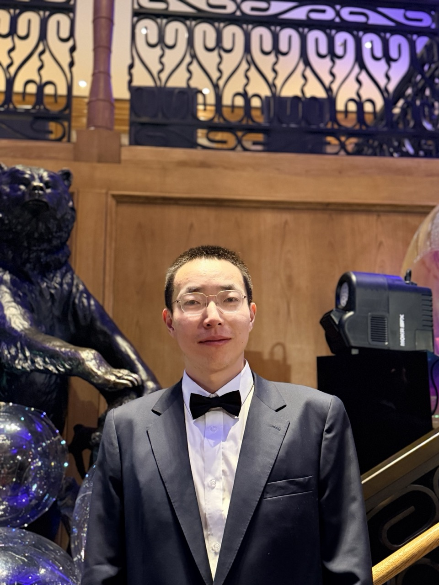

Bill Sun
Chinese name: Qingyun Sun
Stanford Math PhD · AI researcher · investor · founder

Research profile
Stanford Ph.D. in the mathematics of AI. Early transformer contributor and the first researcher at Google Brain to make the Transformer work on QA (2016). A decade across foundational deep learning, large-scale optimization, and production ML in finance.
Published at ICML, NeurIPS, AAAI, CVPR, and CoRL on optimization, training dynamics, generative modeling, and decision-making under uncertainty.
Research roots
Stanford Math PhD focused on the mathematical structure of AI and new model architectures.
Industry track
Google Brain, Millennium, Citadel, Point72 Cubist, then startup building.
Community
Founding member of AGI House and co-builder of AI+.
Multi-agents
Protocol and new market design: AI agents, capital markets, smart contracts, poker, trading.
About
Current agenda
01
Make AI research both verifiable and guided by research taste.
02
Design better agent harnesses and RL in real environments with continuous domain shift, with financial markets as a primary example.
03
Build a financial world model pretrained on time series, events, spreadsheet or tabular data, microstructure, and other continuous signals.
Research
01
Early transformer work at Google Brain, including the first QA result beyond translation.
02
Sparse representations, high-dimensional structure, and unsupervised learning.
03
Optimization under noise, scale, and long training horizons.
04
RL, stochastic control, portfolio optimization, and robust action under delayed feedback.
05
Protocol design and market structure for agentic capital.
Timeline
2023-now
Building AI startups for investing, trading research automation, and machine-native capital markets.
2020-2023
Built an AI-powered forecast trading team at Millennium-WorldQuant, after earlier work at Citadel AI and Point72 Cubist.
2016
Worked on early transformer-era QA research during the formative phase of modern attention models.
2014-2019
Worked on optimization, sparse structure, inverse problems, investment modeling, and stochastic methods with David Donoho and Stephen Boyd.
2015-now
Long-term work on Bitcoin, stablecoins, smart contracts, and agent-native capital protocols.
Network
Hosted and guest conversations across AI, crypto, robotics, startups, and market structure.
Founding member of a Bay Area AI builder network linking researchers, founders, and early operators.
Early AI builder community co-organized with Tim Shi and other founders.
Links